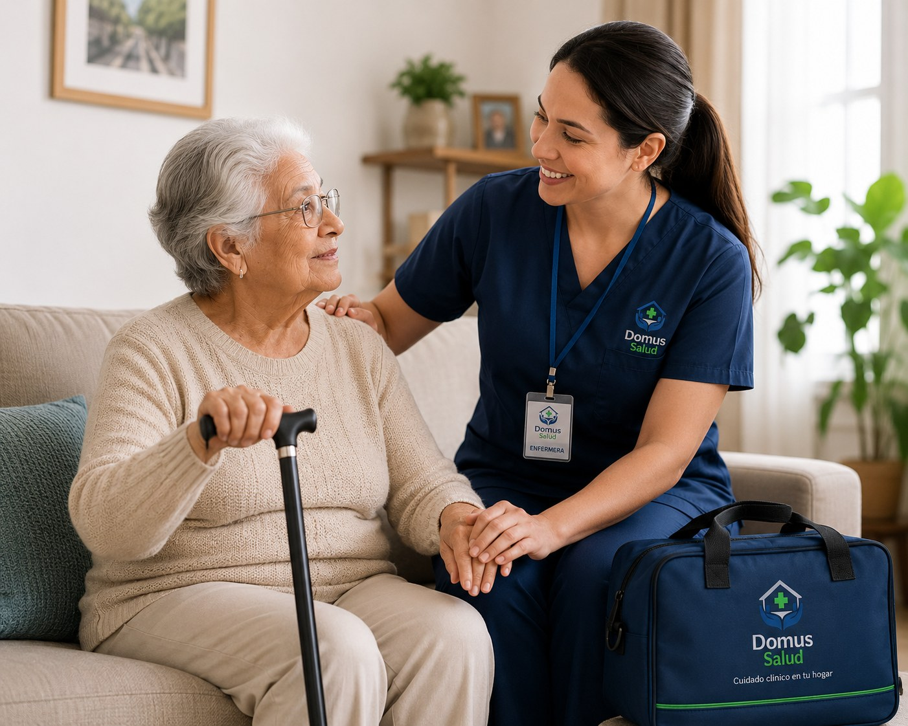
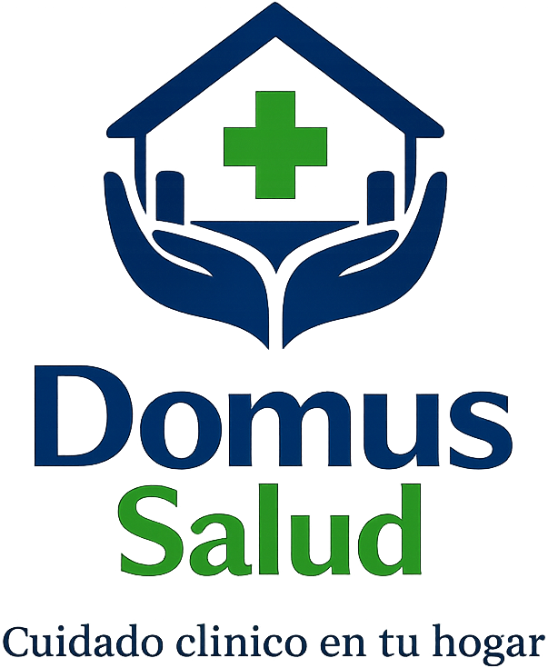

Cuidado de personas mayores
Acompañamiento diario, apoyo en rutinas, compañía, higiene, alimentación, movilidad segura y supervisión general para promover bienestar y tranquilidad familiar.


Quiénes somos
En Domus Salud acompañamos a familias y pacientes con una atención domiciliaria cercana, responsable y ordenada. Nuestro propósito es entregar cuidado profesional en el hogar, manteniendo la dignidad, la seguridad y la tranquilidad de cada familia.
Nuestros servicios
Servicios diseñados para acompañar recuperación, dependencia temporal o permanente, procedimientos clínicos, rehabilitación y bienestar familiar.
Compañía, asistencia diaria, apoyo emocional, higiene, alimentación, movilidad segura y acompañamiento en rutinas.
Prestaciones clínicas a domicilio con profesionales habilitados, seguimiento, educación familiar y enfoque de seguridad.
Apoyo personalizado para promover autonomía, participación, seguridad y calidad de vida en el hogar.
Rehabilitación motora y respiratoria, apoyo funcional, prevención de deterioro y terapias manuales.
Compañía activa, actividades recreativas, estimulación cognitiva y fortalecimiento de vínculos.
Manejo de heridas, cambio de apósitos, control de evolución y educación de cuidados en casa.
Apoyo psicológico, contención, orientación familiar y acompañamiento emocional personalizado.
Nuestro equipo
Un equipo directivo orientado a entregar servicios domiciliarios seguros, cercanos y coordinados.
Enfermera clínica
Cuidado clínico, seguridad de pacientes y mejora continua en la atención domiciliaria.
Testimonios
Los testimonios publicados han sido revisados y aprobados por el equipo administrador de Domus Salud.
Pronto compartiremos experiencias de pacientes y familias que han confiado en Domus Salud.
Domus SaludContacto
Cuéntanos tu situación y te contactaremos para orientar el servicio más adecuado según la necesidad del paciente y la familia.
Acceso privado
Ingresa con tu usuario y clave para administrar perfiles, testimonios, imágenes y revisar métricas básicas.
Panel Domus Salud
Sesión iniciada como
Actualiza la descripción y fotografía visible de cada integrante del equipo.
Sube una nueva imagen para reemplazar la imagen visible de cada slide de la portada.